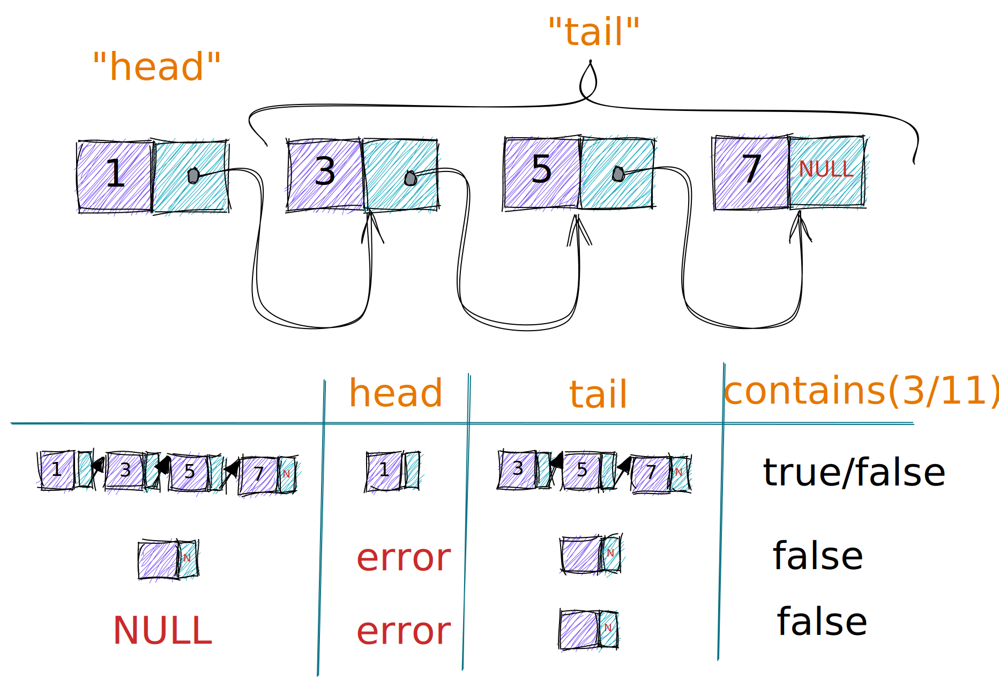

int j = switch (day) {
case MONDAY, null -> 0;
case TUESDAY -> 1;
default -> {
int k = day.toString().length();
yield k;
}
};08:30 | 30' | 🚪 Ankommen and Basics |
09:00 | 60' | 👩🏼💻 Features Live Demo |
10:00 | 30' | ☕️ Pause |
10:30 | 60' | 🧑🏽💻 Code Together |
11:30 | 30' | ⁉️ Fragen und Diskussion |
JDK 19 installieren
z. B. von https://adoptium.net/
alternativ über Homebrew, SDKMan, …
aktuelle IDE (IntelliJ IDEA, Eclipse, Visual Studio Code, …)
sollte Java 19 Features unterstützen
IntelliJ 2022.2, Eclipse 2022-09 (4.25)
JEP 361: Switch Expression
JEP 359: Record Classes
JEP 409: Sealed Classes
JEP 394: Type (instanceof) Pattern
JEP 427: Pattern Matching for switch
JEP 405: Record (deconstruction) pattern
Switch Expression
int j = switch (day) {
case MONDAY, null -> 0;
case TUESDAY -> 1;
default -> {
int k = day.toString().length();
yield k;
}
};Record classes
record Range(List<Integer> values) {
Range { Objects.requirenNonNull(values); }
Range(List<Integer> values) {
this.values = List.copyOf(values);
}
Range(Integer i1, Integer i2) {
this(List.of(i1,i2));
}
int length() { return values.length(); }
}Sealed classes
sealed interface Shape permits Circular, Cornered { }
non-sealed class Circular implements Shape {}
sealed class Cornered implements Shape {
final class Rectangle implements Cornered {}
record Square(int h) implements Cornered {}
}Type (instanceof) Pattern
if (o instanceof Triangle t) {
System.out.println("Area: " + t.calculateArea());
} else if (!(o instanceof String str)) {
System.out.println("Not Triangle or String ");
} else {
System.out.println("String value is:" + str);
}Pattern matching for Switch
switch (s) {
case Triangle t when t.calculateArea() > 100 ->
System.out.println("Large");
case Triangle t -> System.out.println("Small");
default -> System.out.println("Non-triangle");
}Record deconstruction pattern
record Point<T>(T x, T y) {}
static <T> void print(Object o) {
if (o instanceof Point(T x, T y)) {
System.out.println(x + "+" + y);
}
}
Solution und Binärbaum MBoegers/TreeExperiments
Workshop Code sippsack/java-pattern-matching
Artikel zu Records und Sealed Classes dev.java
offizielle Videos zu den aktuellen Features YouTube: javaplatform
Videos, Vorträge, Artikel zu aktuellen Java-Features (Nicolai Parlog) nipafx.dev
Inkubator-Projekt Amber (Papers und JEPs zu Pattern Matching) openjdk.java.net
Feature Demo MBoegers/TreeExperiments
Workshop Code sippsack/java-pattern-matching
TODO